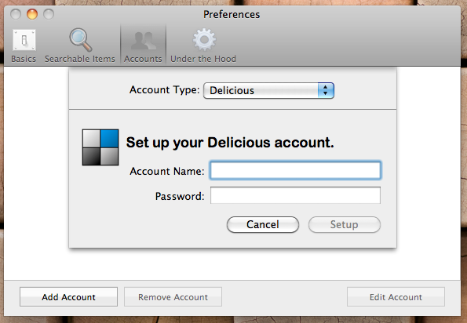
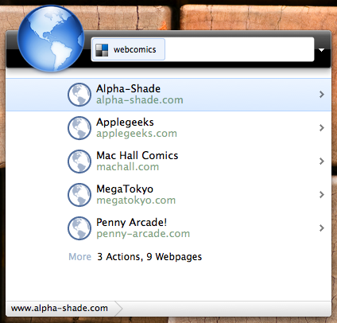

If you use Google Quick Search Box and wish it could search your Delicious bookmarks, you are in luck!
(Questions or suggestions? Let me know)
Download the latest version (for QSB version 2.0.0.3789)
Download the zip file. Unzip it and find a .hgs file. Copy the hgs file to ~/Library/Application Support/Quick Search Box/PlugIns. Restart QSB.
First, add your Delicious account information.
If you have a 'classic' Delicious account, just enter your username and password. 
If you have a Yahoo based account, there are some extra hoops to jump through. Click the button to get a PIN from Yahoo. You will be asked to confirm that you are granting the plugin access to your Delicious data. Once you get a PIN, return to QSB and enter your username and the PIN. (These extra hoops are a side effect of Yahoo using OAuth.)
Once your account is added, search for any of your Delicious bookmarks by name.
You can also search for your Delicious tags. Selecting a tag will open your Delicious page for that tag.
You can even pivot on a tag to narrow your search.
